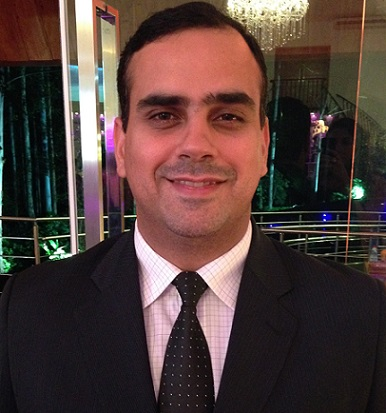
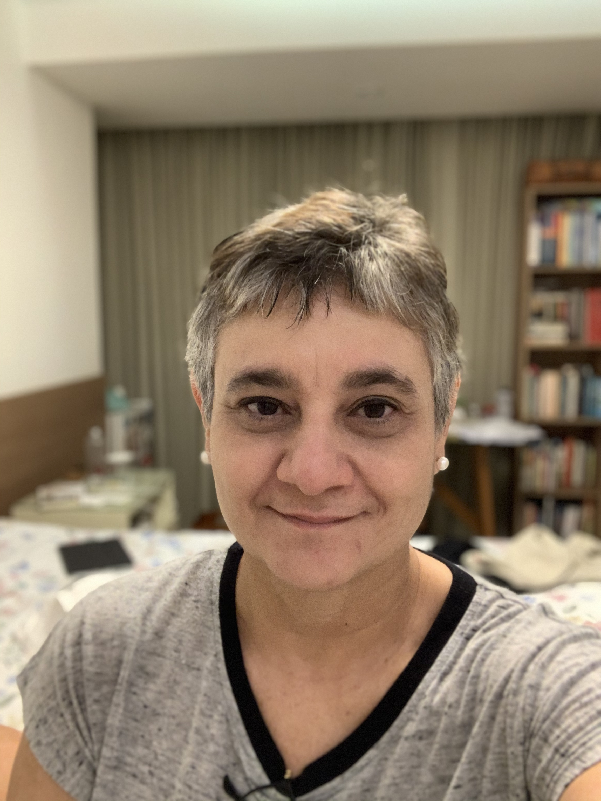
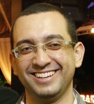
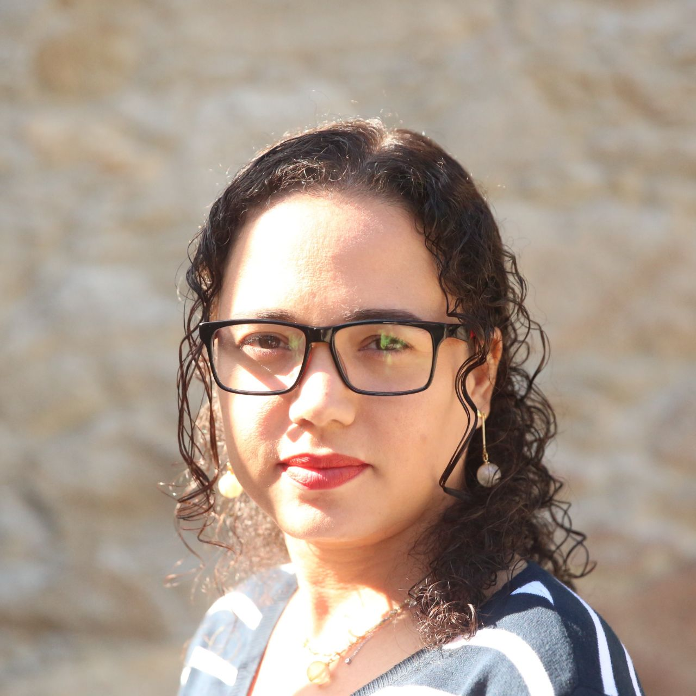

 Edson OliveiraJr - State University of Maringá (UEM)
 Christina von Flach Garcia Chavez - Federal University of Bahia (UFBA)
Adenilso Simão - ICMC-USP
Aline Amaral - DIN-UEM
Andre Endo - UTFPR-CP
Andreia Malucelli - PUCPR
Avelino Zorzo - PUCRS
Bruno Cafeo - UFMS
Carlos Diego Nascimento Damasceno - Radboud University
Cleidson de Souza - UFPA
Edna Canedo - UnB
Eduardo Almeida - UFBA
Elder Rodrigues - UNIPAMPA
Ellen Francine Barbosa - ICMC-USP
Fabiano Ferrari - UFSCar
Fernando Castor - UFPE
Guilherme Travassos - COPPE-UFRJ
Gustavo Pinto - UFPA
Igor Steimacher - UTFPR-CM
Igor Wiese - UTFPR-CM
Ivan Machado - UFBA
Katia Felizardo - UTFPR-CP
Kelly Braghetto - IME-USP
Leonardo Sousa - PUC-Rio
Manoel Mendonça - UFBA
Marcelo Morandini - EACH-USP
Márcio Ribeiro - UFAL
Marco Aurélio Gerosa - Northern Arizona University, USA
Marco Tulio Valente - UFMG
Paulo Borba - UFPE
Paulo Meirelles - UNIFESP
Rafael Prikladinick - PUCRS
Sergio Soares - UFPE
Sheila Reinehr - PUCPR
Tayana Conte - UFAM
Thelma Colanzi - DIN-UEM
Uirá Kulesza - UFRN
 André F. R. Cordeiro - State University of Maringá (UEM)
 Daniela Feitosa - Federal University of Bahia (UFBA)
 Twitter
Twitter
 Contact us
Contact us
Renan Augusto Leonel
Pedro Henrique de Melo Costa